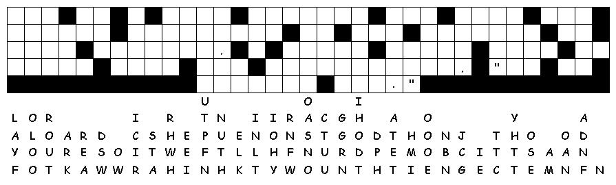

This week's lessons: Acts 17:22-31, Psalm 66:8-20, 1 Peter 3:13-22, John 14:15-21
This
week's lessons: Acts
17:22-31, Psalm
66:8-20, 1
Peter 3:13-22, John
14:15-21
Middle-School Pew-work
|
22Then Paul stood in the midst of Mars' hill, and said, Ye men of Athens, I perceive that in all things ye are too superstitious. 23For as I passed by, and beheld your devotions, I found an altar with this inscription, TO THE UNKNOWN GOD. Whom therefore ye ignorantly worship, him declare I unto you. 24God that made the world and all things therein, seeing that he is Lord of heaven and earth, dwelleth not in temples made with hands;
|
25Neither is worshipped with men's hands, as though he needed any thing, seeing he giveth to all life, and breath, and all things; 26And hath made of one blood all nations of men for to dwell on all the face of the earth, and hath determined the times before appointed, and the bounds of their habitation; 27That they should seek the Lord, if haply they might feel after him, and find him, though he be not far from every one of us: 28For in him we live, and move, and have our being; as certain also of your own poets have said, For we are also his offspring. |
29Forasmuch then as we are the offspring of God, we ought not to think that the Godhead is like unto gold, or silver, or stone, graven by art and man's device. 30And the times of this ignorance God winked at; but now commandeth all men every where to repent: 31Because he hath appointed a day, in the which he will judge the world in righteousness by that man whom he hath ordained; whereof he hath given assurance unto all men, in that he hath raised him from the dead. |
The Athenians believed that the gods were representations of “art and imagination”. How is this understanding of God right or wrong?”__________________________________________________ _________________________________________________________________________________ _________________________________________________________________________________ _________________________________________________________________________________
What beliefs do your schoolmates and peers have about God?________________________________ _________________________________________________________________________________ _________________________________________________________________________________ _________________________________________________________________________________ _________________________________________________________________________________
How can you respect their beliefs, without being false to your own beliefs?_____________________ _________________________________________________________________________________ _________________________________________________________________________________ _________________________________________________________________________________ _________________________________________________________________________________ _________________________________________________________________________________

Created
by Puzzlemaker
at DiscoverySchool.com
Next week: Acts 1:6-14, Psalm 68:1-10, 32-35, 1 Peter 4:12-14, 5:6-11, John 17:1-11